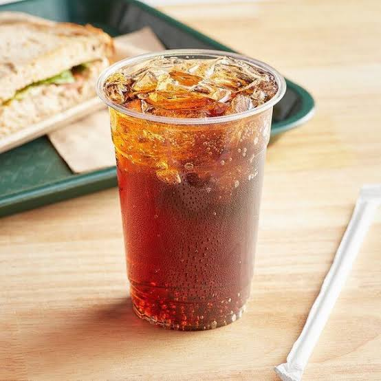
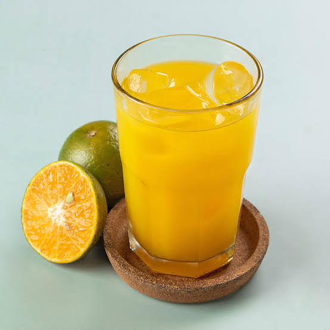

Setiap rasa diracik penuh ketulusan, mengalirkan kehangatan dalam tiap suapan untuk memanjakan lidah dan mengobati rasa rindu.
Agar proses pemesanan makanan Anda berjalan lancar dan cepat disajikan, silakan ikuti langkah-langkah praktis di bawah ini:
Tentukan hidangan hangat atau minuman menyegarkan dari daftar menu yang tersedia.
Sampaikan pesanan Anda langsung kepada pelayan kami yang bertugas atau melalui meja kasir.
Lakukan pengecekan ulang pesanan Anda lalu selesaikan pembayaran secara tunai maupun nontunai.
Sambil menunggu hidangan disajikan, Anda dapat bersantai menikmati suasana hangat Kedai Rumah Keluarga.
Pesanan Anda datang selagi hangat dan siap dinikmati bersama orang tersayang.
Berikut adalah rincian menu yang disajikan dalam bentuk tabel:
| Kategori | Nama Menu Hidangan | Deskripsi Singkat | Harga |
|---|---|---|---|
| Makanan Berat | Nasi Uduk Bapa | Gurihnya santan berpadu aroma rempah pilihan. | Rp 20.000 ($1.30) |
| Ayam Panggang Yang Matinya Difitnah | Bumbu meresap sempurna hingga ke tulang, empuk dan juicy. | Rp 28.000 ($1.80) | |
| Ikan Bakar Tetangga | Segar bakaran ikan laut dengan olesan bumbu manis pedas khas. | Rp 25.000 ($1.60) | |
| Makanan Pendamping (Snack) | Tahu Diri Renyah | Digoreng garing di luar, lembut di dalam, bikin nagih. | Rp 7.000 ($0.45) |
| Telur Dadar Der Dor | Telur dadar tebal gurih dengan kejutan rasa pedas membahana. | Rp 10.000 ($0.65) | |
| Soto Babat Keliru | Kuah kaldu bening berempah hangat dengan babat empuk pilihan. | Rp 18.000 ($1.15) | |
| Minuman Segar & Dessert | Es Teh Manis Senyuman Ibu | Manisnya pas, menyegarkan penat setelah seharian beraktivitas. | Rp 5.000 ($0.30) |
| Es Jeruk Puyunghaii | Perasan jeruk murni asli dengan es serut penyegar jiwa. | Rp 8.000 ($0.50) |

